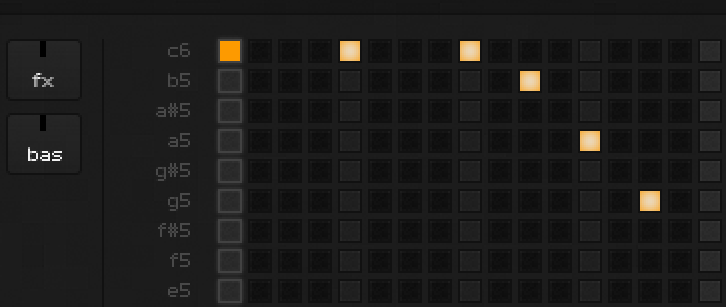

Node.js Server
For the backend architecture, we went with a classic client/server model where all events and changes are sent to the server. Upon receiving these messages, the server would record any changes, do any necessary processing, and finally notify all other clients that the change occurred, so that they can individually update their state.

In this way, eightbitbeat's node.js instance primarily serves as a message relay system that sits between all players to make sure there aren't any syncronization issues. It also ensures that there is an authoritative representation of the room that we can send to new user connections. This type of communication model is essentially what node.js is known to excel at, so once we coded and fired up the server, everything ran quite smoothly.
To get the client talking with the node.js server, we simply dropped in the amazing socket.io module. Using socket.io meant that all the we needed to do was establish a clear API and then split off to code our own respective pieces, without worrying about integration issues. During the entire length of the Knockout event, the members that were focused on the frontend coding didn't need to look at the server code -- nor did they have the time to. As long as communication between the client and server followed the “documentation” we outlined on the whiteboard, every piece of the app knew how to interact, and thus worked flawlessly.
Deployment
For deployment we decided to use Linode. Although there were a host of great deployment options provided by sponsors that we would have loved to try out, we had experience with Linode from personal projects, and knew that we could quickly get things up and running from scratch.
We were grateful that the Node Knockout team provided easy-to-follow steps for contestants to set up their local and production environments. It was clear that they really made an effort to provide a wealth resources and documentation to contestants to ensure maximum time could be spent coding and building a product.
Design Process
We were fortunate enough to have a team with very strong backgrounds in design, UI, and product, which was great when it came time to bounce ideas around. Whenever one of us got stuck or needed input, we would call a huddle at the whiteboard, quickly churn through all the options, and make a decision, often within 20 minutes -- sometimes much faster. The ability to do this came partly from having worked together in this way on a daily basis, but beyond that, we had a common understanding of user interface. We didn't need to waste any time defending one idea or lobbying for another. We knew from experience which options would work, which wouldn't, and which ones needed to be explored further.
On the topic of decision-making, we should note one key habit we nailed down very early Saturday morning. We realized the Feature Creature can run rampant during events like this, with minds stuck in high gear and ideas flying every which way. That’s why the minute our feature list became more than a handful of items, we drew a thick line down the middle of the board and labeled the two sides "must have" and "nice to have". Any time a new (or previously forgotten) feature was suggested, it went into one of the two buckets, and we were sticklers about adding any features to the "must have" section. Through this process, we made sure we wouldn't burn time on anything unless it truly fit into our notion of the minimum viable product. This saved us a ton of time (and headache), and we finished all the "must haves" on Sunday morning with time to spare, which gave us the opportunity to work on some fun, non-critical bits in the final hours.
In terms of visual design, the biggest challenge for eightbitbeats was making efficient use of space. Although available screen real estate gets larger every year, the standard width for a web page still tends to be around 960px, and our first mockups stuck to that standard. However, once we settled on a reasonable size for the sequence buttons (10x10) -- and started laying out additional elements like user avatars, instrument selection, and labels for each instrument's notes -- we realized we would need increase the width, and eventually settled at 1300px. We made a judgement call that, at least for the purposes of the Node Knockout, we could probably assume our audience would be using fairly new hardware with wide-format, high-res displays. (In the days since the code freeze, we've had lots of feedback but no comments regarding page width, so it seems we guessed right.)
Next up, we needed to consider the sequencer matrix. We kept image assets to a minimum in favor of CSS3 to lighten the load, but even so we still had to contend with potentially hundreds of divs on screen at any time. Add to that the fact that each button needed several states including disabled, enabled, active, played, downbeat, measure downbeat, some of which would require nested divs, and we were quickly talking about thousands of elements. Rather than go down that road, we opted to use :before and :after pseudo classes to insert containers dynamically. (See [Nicolas Gallagher's excellent post ](http://nicolasgallagher.com/multiple-backgrounds-and-borders-with-css2) for details on this method). Using this approach simplified our markup considerably and allowed us, with the help of less.css, to handle all the assorted states in a legible stylesheet (less than 400 lines total).
.step {
float: left;
margin-right: 3px;
&.active .note {
border-color: rgba(255,255,255,.1);
box-shadow: 0 0 3px rgba(255,255,255,.1);
}
&.active .note.on:after {
background: rgba(253,154,0,1.0) !important;
}
}
The design of the buttons was inspired by a fantastic gallery of control surfaces, mixers, and other pro audio gear at by livid instruments. We were lucky to have lots of great reference material and a well-defined real-world paradigm to follow. From there, we just had to choose a color scheme and start coding.
Front-End Architecture
We decided to use Backbone.js for our front-end architecture. It gives you just the right amount of tools to be really powerful while remaining super lightweight and flexible. Two devs on our team had already built multiple backbone applications together and so it was a shoe-in. Our architecture looked something like this:
Socket
App model
User model
Player model
MegaMen collection
MegaMan models
Tracks Collection
Track models
Steps Collection
Step models
notes: [0,1,0,0,1,0,0,0,0,0]
ChatLog model
Messages collection
Message models
Its not shown in this diagram but model each has a view associated with it to render its state into html. View the source of our page and you can see the full app unminified
App
At the top level we had an App model and the socket.io connection we will be
communicating through. The App is responsible for initializing the application and
a good place to make references to app wide stuff like the User, Player, and ChatLog models.
When the app starts it syncs state with the server and either creates itself based on data given,
or if there are no other users at the time, it just renders itself into an empty player.
User
TheUser model just gets populated with the current users info and is referenced when permissions are calculated
or messages are sent.
Player
The Player contains most of the meat of the application. It holds the Tracks and is used to store the state of the current iteration. Essentially what happens is when the players step attribute is incremented by the game loop each Track and the MegaMen are listening and respond by rendering themselves into the new state. Since the callbacks run asynchronously it makes it easy to keep all tracks and then Megaman in sync with eachother. In the case of the tracks, they are also told to loop over the specified steps notes and play the associated sound files.
We will be doing a more technical follow up post that goes over the code involved in making the player work
ChatLog
The ChatLog was thrown in last and we didn't have time to complete it. As you may have noticed there is no chat log in the app :). We are still mounting our Messages collection there so we can easily build it out later. When a user chats it adds a new Message to the Messages collection and sends that data throught the socket with the username. This way we know which user to place the chat bubble in the other clients apps.